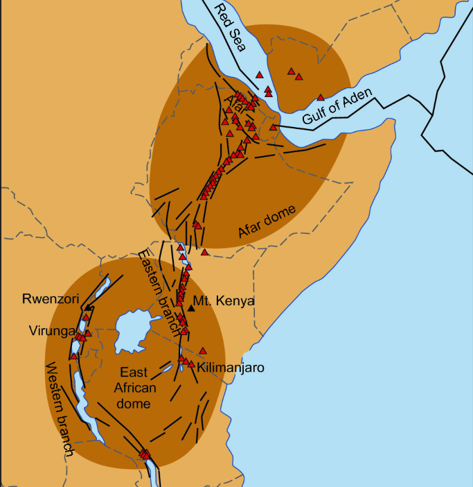
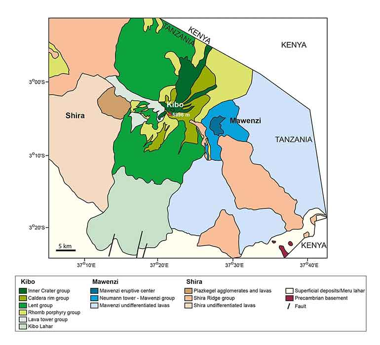
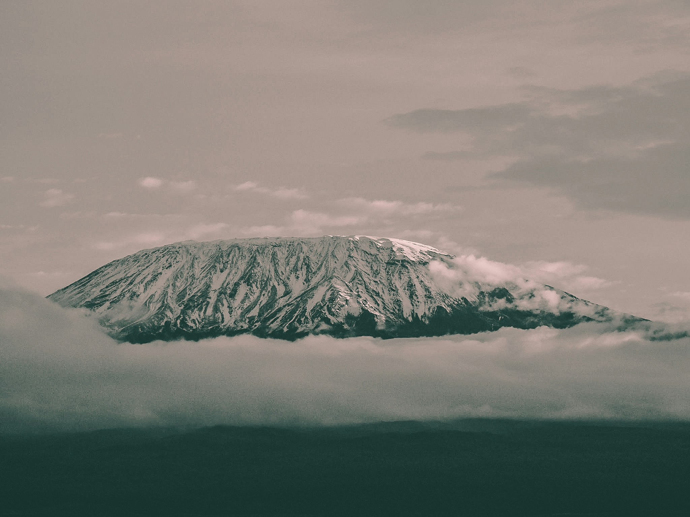

Africa's Giant
Kilimanjaro is a large, dormant volcano that stands alone, looking across the Tanzanian and Kenyan plains and residing as the highest mountain in Africa. Rising from the concentrated volcanism in the East African Rift, the stratovolcano sits on top of a rifting African tectonic plate. Unlike the Himalayas, which were formed by the collision of two continental plates, Kilimanjaro's formation is attributed to hotspot volcanism, which sees the volcano rise to neary 4,900 metres (19,341 feet), above sea level.

Hotspot Activity
Across the East African Rift, the thinner, stretched lithosphere is forced upwards by a mantle plume. As a result, the brittle crust fractures and the fissures are penetrated by large floods of basaltic lava sourced from decompression melting of the mantle. This has resulted in extensive thick basaltic flood deposits dominating the landscape.
The volcano is composed of three separate volcanic cones: Kibo, Mawenzi and Shira. Whilst Mawenzi and Shira are classified as extinct, Kibo (the highest cone) is dormant with the potential to erupt again.
Uhuru Peak is the tallest point of Kilimanjaro, and the highest point in all of Africa, listed at 5,895 metres elevation. Kilimanjaro’s volcanism is estimated to have begun between 2.5 and 1 million years ago, beginning with the Shira volcanic cone. The most recent major eruption however was over 150,000 years ago, giving the mountain its dormant status.

Glaciers... In Africa?
Stunningly, the hottest continent in the world still hosts a set of glaciers and ice fields due to the extreme height of Kilimanjaro. The largest of these ice bodies is known as the Northern Ice Field.
Previously, the summit of Kilimanjaro was covered by one singular ice cap known as the ‘Furtwangler Glacier’, however severe recession and melting has meant the remaining ice has been split into several distinct bodies.
The ice cap has been retreating rapidly since the late 19th century, with the Northern Ice Field losing over 80% of its volume since 1912. This is a result of both climate change and sublimation, where ice is lost directly to the atmosphere without even melting into water first. The ice fields are also highly sensitive to changes in precipitation, which is why they are so vulnerable to climate change.
East African Rift
Kilimanjaro is located in the East African Rift, a tectonic plate boundary where the African Plate is being pulled apart. This rifting process has created a series of faults and fractures in the crust, allowing magma to rise to the surface and form volcanoes like Kilimanjaro. The rift is also responsible for the formation of the Great Lakes of Africa and has influenced the region's topography and climate.
The rift is an active geological feature, and its ongoing activity continues to shape and dictate the landscape of the region. Kilimanjaro's location within this rift zone makes it a key site for studying the interactions between tectonics, volcanism, and climate in East Africa.


Geohazards
Because the Indian Plate continues to move northward, pent-up stress accumulates along major faults, storing elastic energy within the rock. Eventually, the fault line snaps loose, releasing centuries worth of stored strain in a matter of seconds. This violent release radiates seismic energy throughout the earth in the form of an earthquake.
The largest recorded earthquake exhibited in the Himalayan region was the 1950 Assam-Tibet earthquake, which resulted in approximately 4,800 deaths. The magnitude 8.7 earthquake was caused by the rupture of the previously mentioned Main Frontal Thrust (MFT). Today, scientists estimate that sections of the Main Himalayan Thrust remain "locked," storing strain that could produce future great earthquakes (magnitude 8 or greater).
Due to the rapid plate movement speeds, stress accommodation means earthquakes are commonly exhibited in the Himalaya region. This results in major erosional processes such as landslides, rock falls and debris flows. Monsoonal climate systems accelerate and exaggerate the risk posed by these geohazards due to saturation of slopes, possibly triggering these gravity-derived flows.
The Himalayas also act as a vast physical barrier to atmospheric air circulation, helping drive the Asian monsoon by forcing warm, moist air upwards and over the mountains. This produces intense seasonal (monsoonal) rainfall across the range, which feeds into major river systems including the Ganges, Indus, Yangtze and Mekong.
This means the same mountain system that provides water for nearly two billion people also creates major geohazards, including flash floods and debris flows that threaten communities throughout the Himalayan river valleys and downstream river deltas.
“There are no happy faces above 15,000 feet."" — Barry Finlay, Kilimanjaro and Beyond - 2011

The Himalayas represent an active orogenic system where plate tectonics, erosion, and climate interact on a continental scale, affecting billions of people.
The rocks preserve the history of destructive collision between huge landmasses, alongside evidence of a now-closed, subducted ancient ocean which was once home to extinct life forms.
As one of the youngest mountain ranges on the planet, the Himalayas remain core to modern geoscientific research and provide valuable outcrops and insights into the theories and processes that continue to shape our world.